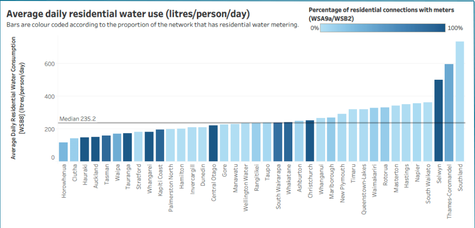

-A leaky tap or toilet could waste alot of water overtime. In fact a leaky tap could waste about 20 litre of water day, that's 7280 litre of water a year!
Over watering plants can waste alot of water in the long run. One way to avoid this is to not water plants when it is not needed and water during the coolest part of the day.
Installing a water meter can help homeowner keep track of their water usage and what area are using the most water.
Taking shorter shower can actually save a lot of water. A five-minute shower takes about 50 litre of water while a ten-minute shower takes about 100 litres!
Using a compost bin can help reduce water usage. Composting organic material can improve soil health which means less watering of plants!

In this graph by Water NZ it highlights the fact that alot of residential don't have alot of water connections with meter
and most rural area have 0-35% water connections to meters.
The highest average of average daily water consumption is on the south island with over 600 litre used daily.
Although this could be due to all the south island town being into one category.
The median average daily water usage is 235.2 litres,